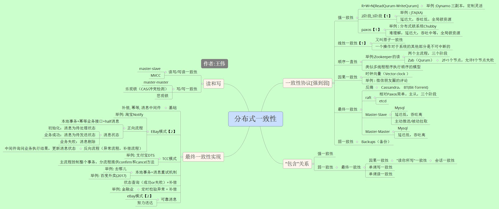

分布式一致性

参考：
1. 保证分布式系统数据一致性的6种方案
2. 深入解析NoSQL数据库的分布式算法
3. ZooKeeper真不是最终一致性的，而是顺序一致性 陈东明
4. 为什么程序员需要关心顺序一致性（Sequential Consistency）而不是Cache一致性（Cache Coherence） carlosstephen
5. 线性一致性(Linearizability)是并发控制的基础 陈东明
6. 分布式事务之TCC事务 梁钟霖
7. 分布式事务之TCC服务设计和实现注意事项 绍辉
8. ENode 1.0 - Saga的思想与实现 汤雪华
9. https://github.com/www6v/tcc-transaction